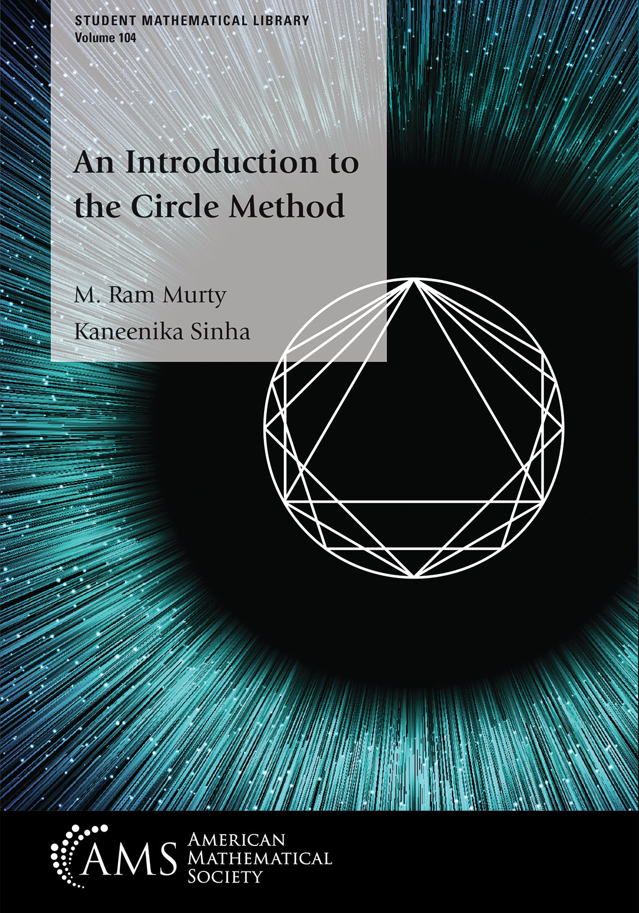

Ram Murty
A. V. Douglas Distinguished University Professor and Queen's Research Chair
E-mail:murty at mast dot queensu dot ca
|
Math/Stat Department Home Page
Rota's Ten Lessons
Office: Jeffery Hall, Room 517
Office Hours: By appointment
Office Phone: (613) 533-2413
Office FAX: (613) 533-2964
|
Department of Mathematics, Jeffery Hall,
99 University Avenue, Queen's University,
Kingston, Ontario, K7L 3N6, Canada
|
Courses for 2026-2027
Math 381: (Fall Semester)
Mathematics with a Historical Perspective
Text:C.B. Boyer, A History of Mathematics, 3rd edition
Mon. 11.30am-12.20pm Kingston Hall Room 201
Tue. 1.30pm-2.20pm Kingston Hall Room 201
Thu. 12.30pm-1.20pm Kingston Hall Room 201
|
Phil 410/810: (Fall Semester)
Topics in the History of Philosophy: Indian Philosophy
Texts:
M. Ram Murty, Indian Philosophy: An introduction, Broadview Press, 2012.
S. Radhakrishna and C. Moore, A sourcebook of Indian philosophy, Princeton University Press, 1967
Swami Vivekananda, Yogas and other works, edited by Swami Nikhilananda, Ramakrishna-Vivekananda Center, New York, 1957
Time: Tue., 8.30am-11.20am,
Place:Jeffery Hall Room 110.
|
|
Recent Books
 |
Introduction to the Circle Method
|
A Second Course in Analysis
|
Hilbert's Tenth Problem
|
Panorama Lectures:
Ramanujan Conjectures and Zeta Functions |
Problems in the
Theory of Modular Forms |
Transcendental Numbers
|
Indian Philosophy:
An Introduction |
The Mathematical Legacy
of Srinivasa Ramanujan |
A First Course in Graph
Theory and Combinatorics |
Automorphic L-functions |
(with Kaneenika Sinha)
American Mathematical Society,
2023 |
IMSC Lecture
Notes - 4
2020 |
(with B. Fodden)
American Mathematical Society,
2019 |
Ramanujan Mathematical Society,
2018 |
(with M. Dewar & H. Graves),
IMSc Lecture Notes, 2015 |
(with P. Rath),
Springer, 2014. |
Broadview Press, 2013. |
(with V. Kumar Murty),
Springer, 2012. errata |
(with S. Cioaba),
HBA, 2009
errata |
(with J. Cogdell and H. Kim),
Fields Inst./AMS, 2009. |
Earlier Books
Useful Links
Mathscinet Search
Number Theory Web
Kumar Murty's Page
Library/Queen's University
JSTOR(Mathematics)
Some vintage photos
Some of my Youtube lectures
Mathematics, Measurement and Information Technology, IMSC (July 6, 2015)
A short course on modular forms (10 lectures)(IISER, Bhopal, August 2016)
A mini-course on analytic number theory (8 lectures (IMSC. Chennai,July, 2016)
The Ramanujan tau function (Talk at IMSC, December, 2019)
Some remarks on the Birch-Swinnerton-Dyer conjecture (May 27, 2020)
Ramanujan Yatra (Talk on the tau function, Vigyan Prasar, September 24, 2020)
Ramanujan Graphs: a retrospective (Virtual talk at Kerala School of Mathematics, December 2020)
The Art and Science of Research (4 August 2021, Virtual Talk, IIT Delhi)
The arithmetic of function fields over finite fields, September 21, 2021.
The Art of Research (Virtual talk given at Chennai Math Institute, January 9, 2022)
The Divinity of Numbers (Virtual Interview of Tattva Deep, January 29, 2022)
Brain networks and graph theory Mathematical Teachers Association of India, September 10, 2022.
Fermat quotients and the Ankeny-Artin-Chowla conjecture,virtual talk at the Kerala School of Mathematics, November 22, 2022.
Probability and Number Theory (10 lectures) (Harish-Chandra Research Institute, Prayagraj, India, December 15-20, 2022)
Ramanujan and His Legacy (Talk at IMSC, December 26, 2022)
Unimodal sequences: from Isaac Newton to June Huh (Virtual talk at IISER Kolkata, May 28, 2023)
The Math behind the Chat (GPT)(Virtual talk at IISER Kolkata, June 28, 2023)
Research Interests
Number Theory: Artin's conjecture, Elliptic curves, Modular Forms,
Automorphic forms, Langlands Program, Selberg's conjectures, Sieve Methods,
Cryptography
More research description can be found at
CICMA
Here is chronological list of mathematical publications:
LIST
Here is the list of philosophical publications: LIST
This is the link for Mathematical Reviews of my papers.
Here is the link to my mathematical genealogy.
Degrees and Honours
- Ph.D. (MIT, 1980) (Advisor: Harold Stark)
- Coxeter-James Prize, 1988
- Fellow of the Royal Society of Canada (1990 - )
- E.W.R. Steacie Fellow (1991-1993)
- J.H.H. Nesbitt Lecturer, 1992
- Kenneth Ireland Lecturer, 1993
- Balaguer Prize (1996) jointly with V. Kumar Murty (see August 1996 issue of the Notices of the AMS)
- Killam Research Fellow (1998-2000)
- Jeffery-Williams Prize, 2003
- Queen's Research Chair, 2002
- Fellow of the Fields Institute, 2003
- Queen's Research Prize, 2003
- Adjunct Professor, McGill University (Montreal), Harish-Chandra Research Institute (Allahabad), Institute for Mathematical Sciences (Chennai), Chennai Mathematical Institute (Chennai), Indian Institute of Technology (Mumbai), Tata Institute for Fundamental Research (TIFR, Mumbai), Indian Institute for Scientific Education and Research (Bhopal), Indian Institute for Scientific Education and Research (Mohali).
- Cross-appointment to the Department of Philosophy
- Elected Fellow of the National Academy of Sciences (India), 2007.
- Elected Fellow of the Indian National Science Academy (INSA), 2008.
- Elected Fellow of the American Mathematical Society, 2012.
- Simons Fellowship, 2013-2014.
- Award for Excellence in Graduate Student Supervision, 2018.
- Elected Fellow of the Canadian Mathematical Society, 2018.
- CRM-Fields-PIMS Prize, 2024.
Current Post-Doctoral Fellows: Amrinder Kaur (2026-2029)
Current Doctoral Students: Nicolo Fellini
Theses supervised:
- Ian Miyamoto, Primes and elliptic curves, M.Sc. thesis, McGill University, 1988.
- David Clark, L-series and ranks of elliptic curves, M.Sc. thesis, McGill University, 1988. (clark@math.byu.edu)
- David Clark, The Euclidean algorithm for Galois extensions of the rational numbers, Ph.D. thesis, McGill University, 1992.(clark@math.byu.edu)
- Tomasz Stefanicki, Non-vanishing of L-functions attached to automorphic representations of GL(2), Ph.D. thesis, McGill University, 1992.
- Francesco Pappalardi, On Artin's conjecture for primitive roots, Ph.D. thesis, McGill University, 1993. (pappa@mat.uniroma3.it)
- Chantal David, Supersingular Drinfeld modules, Ph.D. thesis, McGill University, 1993. (chantal@discrete.concordia.ca)
- Ashwaq Hashim, Application of Lindelof hypothesis to cusp forms, M.Sc. thesis, McGill University, 1993. (ucakash@ucl.ac.uk)
- Yuanli Zhang, Some analytic properties of automorphic L-functions, Ph.D. thesis, McGill University, 1994.(yz@math.purdue.edu)
- Sridhar Narayanan, Selberg's conjectures, M.Sc. thesis, McGill University, 1994.(sri@esankya.com)
- Keldon Drudge, The ABC Conjecture, M.Sc. Thesis, McGill University, 1995.
- Minatsu Yamaji, Applications of Brauer Induction to Artin L-functions, M.Sc. Thesis, McGill University, 1996.
- Francesco Sica, The order of vanishing of L-functions at the center of the critical strip, Ph.D. thesis, McGill University, 1998.
- Satya Mohit, The Wieferich criterion, the ABC conjecture and Shimura's correspondence, M.Sc. thesis, Queen's University, 1998.
- Yu-Ru Liu, The Turan sieve and some of its applications, M.Sc. thesis,
Queen's University, 1998.(yrliu@math.harvard.edu)
- Filip Saidak, On conjectures about the distribution of primes in various sequences,
M.Sc. thesis, Queen's University, 1998.(filips@math.ucalgary.ca)
- Malcolm Harper (PhD, McGill), A proof that $Z[\sqrt{14}]$ is Euclidean, Ph.D. thesis, McGill University,
2000.
- Steven Pope,
On Problems of Cryptography: Primality testing and Factoring integers, M.Sc.
thesis, Queen's University, 2000.
- Filip Saidak,
On non-abelian generalizatons of the Erdös-Kac theorem, Ph.D. thesis, Queen's University, 2001.
- Alina Cojocaru,
Cyclicity of Elliptic Curves modulo p, Ph.D. thesis, Queen's University, 2002.
- Kaneenika Sinha, Generalized Hurwitz zeta functions, (MSc, Queen's, 2002).
- Talia Borodin, Primality Testing and Factoring, (M.Sc., Queen's, 2003).
- Benjamin Ju, Elementary Proofs of the Prime Number Theorem,
(M.Sc., Queen's, 2003).
- Tim Wotherspoon, Analysis of the Narayana-Fermat Factoring Algorithm(M.Sc., Queens, 2004).
- Jeanine Van Order, Counting Integral Ideals in an Algebraic Number Field,(M.Sc., Queen's, 2005).
- Sebastian Cioaba, Eigenvalues, Expanders and Gaps between Primes, (Ph.D., Queen's, 2005).
- Kaneenika Sinha, Effective Equidistribution of Eigenvalues of Hecke Operators, (Ph.D., Queen's, 2006).
- Brandon Fodden, Diophantine equations and the Generalized Riemann hypothesis (Ph.D., Queen's, 2007).
- Marilyn Reece Myers, Variations of Kummer's Conjecture (Ph.D., Queen's, 2007).
- Chester Weatherby, Transcendence of various infinite series and applications of Baker's theorem (Ph.D., Queen's, 2009).
- Robert Rundle, Generalized Pythagorean Triples (M.Sc., Queen's, 2007).
- Adam Felix, The order of a mod p and Artin's conjecture(M.Sc., Queen's, 2007).
- Andrew Droll, Properties of Ramanujan graphs (M.Sc., Queen's, 2008).
- Marc Papais, Graph spectra and the Ihara zeta function: implications and connections (M.Sc., Queen's, 2008).
- Carpio Cheng, Grimm's conjecture and a Gaussian analogue, (M.Sc. Queen's, 2009).
- Adam Felix,, Variations on Artin's primitive root
conjecture (Ph.D., Queen's, 2011)
- Robert Rundle, Generalization of Ruderman's problem to imaginary quadratic fields (Ph.D., Queen's, 2012)
- Andrew Droll,, Variations of Li's criterion for an extension of the Selberg class (Ph.D., Queen's, 2012).
- Ryan Case, Ramanujan-Fourier series and applications (M.Sc., Queen's, 2013).
- Hector Pasten, Arithmetic problems around the abc conjecture
and connections with logic, (Ph.D., Queen's, 2014).
- Siddhi Pathak, The Chowla problem and its generalizations, (M.Sc., Queen's, 2015)
- Kannappan Sampath , The saddle point method and its applications to number theory(M.Sc., Queen's, 2015)
- Akshaa Vatwani, Higher rank sieves and applications(Ph.D., Queen's, 2016).
- Arpita Kar, Representation of numbers by
quaternary quadratic forms, (M.Sc. Queen's, 2016).
- Peng-Jie Wong,
Character theory and Artin L-functions (Ph.D., Queen's, 2017).
- Francois Seguin,
The two-variable Artin conjecture and elliptic analogues (Ph.D., Queen's, 2018)
- Siddhi Pathak,
Special values of L-series, periodic coefficients, and related themes
(Ph.D., Queen's, 2019).
- Christopher Zajner, An Encounter between East and West: The notion of truth in William James and Swami Vivekananda (M.A. Philosophy, Queen's, 2020).
- Paul Wilson, Lattices, codes and sphere packing problems (M.Sc., Queen's, 2020).
- Arpita Kar, Normal order of certain arithmetic functions and new analogues of the Erdos-Kac theorem (Ph.D., Queen's, 2020).
- Benoit Urvari, Cicero's Search for Yoga, (M.A. Philosophy, Queen's, 2022).
- Stephen Berry, Panpsychism, Vivekananda and the Hard Problem of
Consciousness, (M.A. Philosophy, Queen's, 2024).
- Rebecca Carter, Eigenvalue spacings of transition matrices associated to directed graphs, (Ph.D., Queen's, 2026)
|